|
|
| flatworms text index | photo index |
| worms > Phylum Platyhelminthes > Class Turbellaria > Order Polycladida |
| Marbled flatworm Pseudoceros sp. 1 Family Pseudocerotidae updated Feb 2020 Where seen? This small flatworm is sometimes seen on Beige sheet asicidians that are growing under rocks. So far, only seen on our Northern shores. Features: 1-3cm long. Body pale beige with irregular dark markings, irregular dark stripe along the middle. Body margin with irregular dark bars perpendicular to the margin and a fine narrow orange line cutting across the dark bars near the body edge. Has a pair of pseudotentacles made up for simple folds of the body edge. What does it eat? When one flatworm was removed, there was a circular hole in the encrusting ascidian under it. Did the flatworm eat the ascidian? |
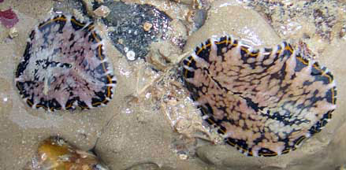 Tanah Merah, Dec 10 |
*Species are difficult to positively identify without close examination.
On this website, they are grouped by external features for convenience of display.
| Marbled flatworms on Singapore shores |
On wildsingapore
flickr
|
| Other sightings on Singapore shores |
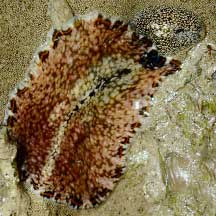 Pulau Ubin, Jun 21 Photo shared by Toh Chay Hoon on facebook. |
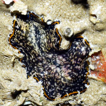 Chek Jawa, May 2025 Photo shared by Loh Kok Sheng on facebook. |
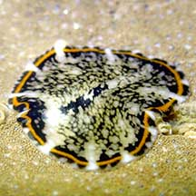 Pasir Ris Park, Dec 20 Photo shared by Jianlin Liu on facebook. |
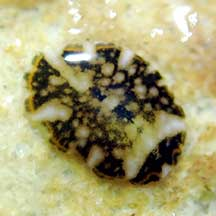 Pasir Ris Park, Jan 21 Photo shared by Jianlin Liu on facebook. |
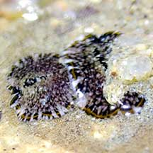 Pasir Ris Park, Jan 21 Photo shared by Jianlin Liu on facebook. |
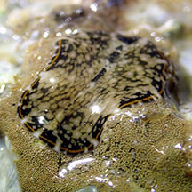 Changi, Jun 20 Photo shared by Jianlin Liu on facebook. |
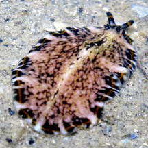 Chek Jawa, Jul 18 Photo shared by Jianlin Liu on facebook. |
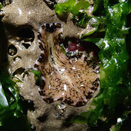 Chek Jawa, Jul 18 Photo shared by Jianlin Liu on facebook. |
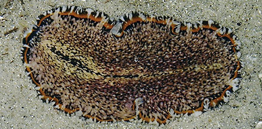 Chek Jawa, Jul 16 Photo shared by Toh Chay Hoon on facebook. |
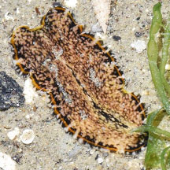 Chek Jawa, Jun 17 Photo shared by Loh Kok Sheng on facebook. |
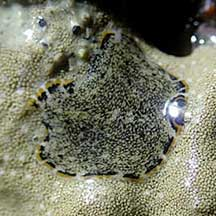 East Coast Park, Nov 21 Photo shared by Jianlin Liu on facebook. |
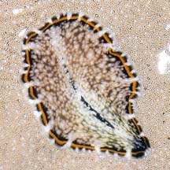 Sentosa Tg Rimau, Nov 21 Photo shared by Loh Kok Sheng on facebook. |
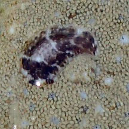 Big Sisters Island, Feb 24 Photo shared by Toh Chay Hoon on facebook. |
References
|